Recurrent Neural Network
Introduction
Rich semantic representations of text, and a simple linear classifier on top of the embeddings. What this architecture does is to capture aggregated meaning of words in a sentence, but it does not take into account the order of words, because aggregation operation on top of embeddings removed this information from the original text.
Because these models are unable to model word ordering, they cannot solve more complex or ambiguous tasks such as text generation or question answering.
To capture the meaning of text sequence, we need to use another neural network architecture, which is called a recurrent neural network, or RNN. In RNN, we pass our sentence through the network one symbol at a time, and the network produces some state, which we then pass to the network again with the next symbol.
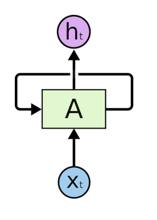
Given the input sequence of tokens \(X_0,\dots,X_n\), RNN creates a sequence of neural network blocks, and trains this sequence end-to-end using back propagation.

A recurrent neural network can be thought of as multiple copies of the same network, each passing a message to a successor. Each network block takes a pair \((X_i,S_i)\) as an input, and produces \(S_{i+1}\) as a result. \[ S_{i+1}= f(X_i,S_i) \] Final state \(S_n\) or output \(X_n\) goes into a linear classifier to produce the result. All network blocks share the same weights, and are trained end-to-end using one backpropagation pass.
Because state vectors \(S_0,\dots,S_n\) are passed through the network, it is able to learn the sequential dependencies between words. For example, when the word not appears somewhere in the sequence, it can learn to negate certain elements within the state vector, resulting in negation.
1 | class MyRNN(nn.Module): |
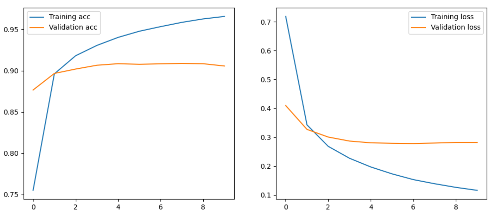
In our case, we will use padded data loader, so each batch will have a number of padded sequences of the same length. RNN layer will take the sequence of embedding tensors, and produce two outputs:
- x is a sequence of RNN cell outputs at each step
- h is a final hidden state for the last element of the sequence
We then apply a fully-connected linear classifier to get the number of class.
Note: RNNs are quite difficult to train, because once the RNN cells are unrolled along the sequence length, the resulting number of layers involved in back propagation is quite large. Thus we need to select small learning rate, and train the network on larger dataset to produce good results. It can take quite a long time, so using GPU is preferred.
Long Short Term Memory (LSTM)
经典 RNN 的主要问题之一是所谓的梯度消失问题。RNNs在一次反向传播过程中进行端到端的训练，它很难将错误传播到网络的第一层，因此网络无法学习遥远的 token 之间的关系。
避免这个问题的方法之一是通过使用所谓的 gates 来引入明确的状态管理。有两种最著名的此类架构。长短期记忆（LSTM）和Gated Relay Unit（GRU）。
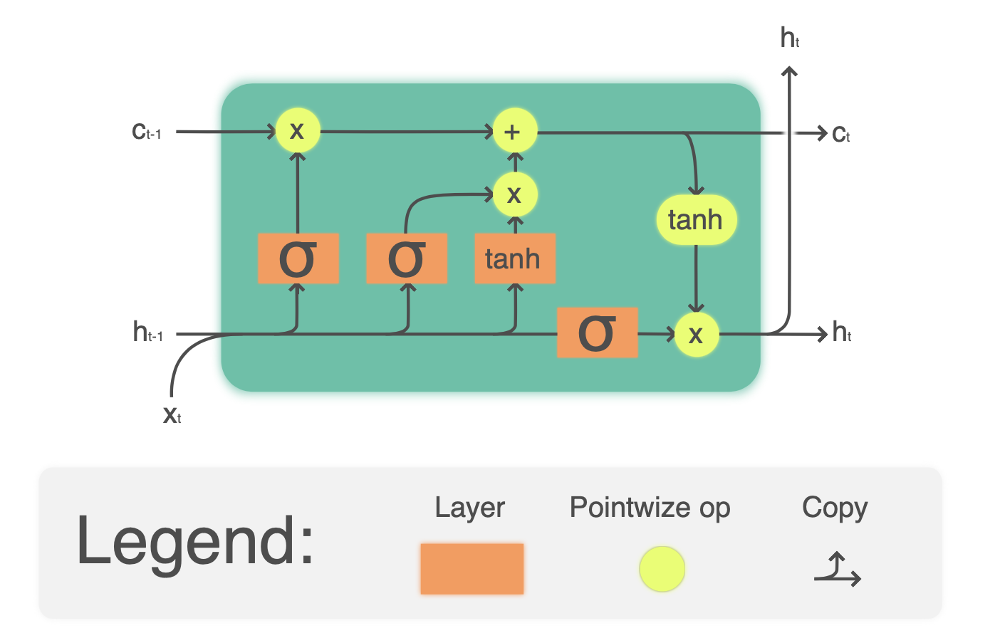
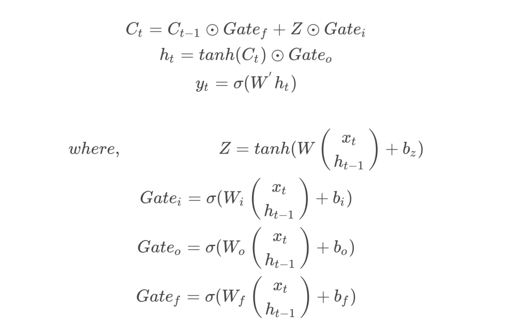
At each unit, hidden vector \(h_i\) is concatenated with input \(x_i\), and they control what happens to the state \(c\) via gates. Each gate is a neural network with sigmoid activation (output in the range \([0,1]\)), which can be thought of as bitwise mask when multiplied by the state vector. There are the following gates (from left to right on the picture above):
forget gate takes hidden vector and determines, which components of the vector \(c\) we need to forget, and which to pass through.
input gate takes some information from the input and hidden vector, and inserts it into state.
output gate transforms state via some linear layer with \(\tanh\) activation, then selects some of its components using hidden vector \(h_i\) to produce new state \(c_{i+1}\).

1 | class LSTMClassifier(nn.Module): |
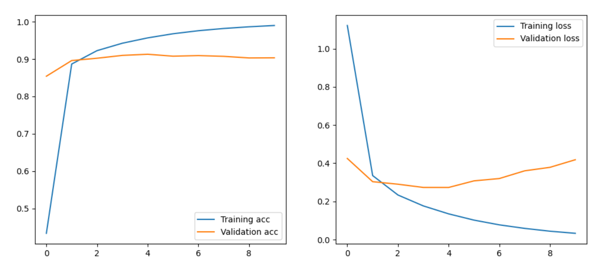
Packed sequences
In our example, we had to pad all sequences in the minibatch with zero vectors. While it results in some memory waste, with RNNs it is more critical that additional RNN cells are created for the padded input items, which take part in training, yet do not carry any important input information. It would be much better to train RNN only to the actual sequence size.
To do that, a special format of padded sequence storage is introduced in PyTorch. Suppose we have input padded minibatch which looks like this:
\[ [[1,2,3,4,5], \\ [6,7,8,0,0],\\ [9,0,0,0,0]] \]
Here 0 represents padded values, and the actual length vector of input sequences is
[5,3,1].In order to effectively train RNN with padded sequence, we want to begin training first group of RNN cells with large minibatch (
[1,6,9]), but then end processing of third sequence, and continue training with shorted minibatches ([2,7],[3,8]), and so on. Thus, packed sequence is represented as one vector - in our case[1,6,9,2,7,3,8,4,5], and length vector ([5,3,1]), from which we can easily reconstruct the original padded minibatch.To produce packed sequence, we can use
torch.nn.utils.rnn.pack_padded_sequencefunction. All recurrent layers, including RNN, LSTM and GRU, support packed sequences as input, and produce packed output, which can be decoded usingtorch.nn.utils.rnn.pad_packed_sequence.To be able to produce packed sequence, we need to pass length vector to the network, and thus we need a different function to prepare minibatches:
1 | def pad_length(b): |
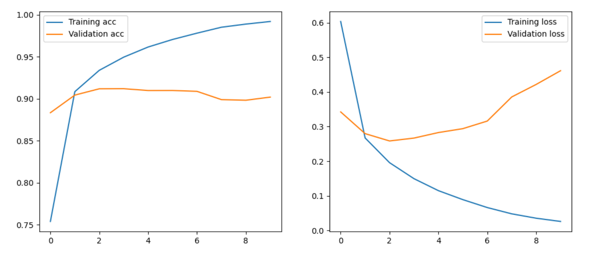
Bidirectional and multilayer RNNs
在我们的例子中，所有的递归网络都在一个方向上运行，从一个序列的开始到结束。这看起来很自然，因为它类似于我们阅读和聆听语言的方式。然而，由于在许多实际案例中，我们可以随机访问输入序列，因此在两个方向上运行递归计算可能是有意义的。这样的网络被称为双向RNN，它们可以通过向RNN/LSTM/GRU构造函数传递bidirectional=True参数来创建。
在处理双向网络时，我们需要两个隐藏状态向量，每个方向一个。PyTorch将这些向量编码为一个大一倍的向量，这很方便，因为你通常会将产生的隐藏状态传递给全连接的线性层，你只需要在创建层的时候考虑到这个大小的增加。 递归网络，单向或双向，捕捉序列中的某些模式，并可以将它们存储到状态向量或传递到输出。与卷积网络一样，我们可以在第一层的基础上建立另一个递归层，以捕捉更高层次的模式，这些模式是由第一层提取的低层次模式建立的。这使我们想到了多层RNN的概念，它由两个或更多的递归网络组成，上一层的输出被传递到下一层作为输入。
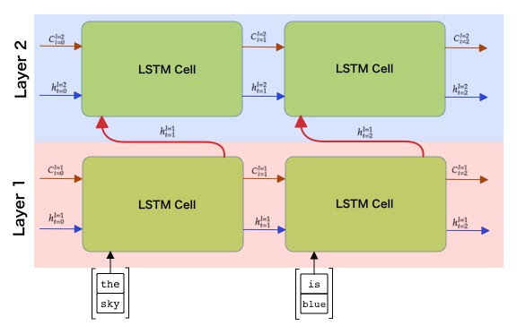
Generative networks
递归神经网络（RNN）及其门控单元的变体，如长短期记忆单元（LSTM）和门控递归单元（GRU）为语言建模提供了一种机制，即它们可以学习单词排序并提供对序列中下一个单词的预测。这使我们能够将RNN用于生成任务，如普通文本生成、机器翻译，甚至图像字幕。
在我们在上一单元讨论的RNN架构中，每个RNN单元产生下一个隐藏状态作为输出。然而，我们也可以给每个递归单元添加另一个输出，这将使我们能够输出一个序列（其长度与原始序列相等）。此外，我们可以使用RNN单元，在每一步都不接受输入，只接受一些初始状态向量，然后产生一个输出序列。

- One-to-one is a traditional neural network with one input and one output
- One-to-many is a generative architecture that accepts one input value, and generates a sequence of output values. For example, if we want to train image captioning network that would produce a textual description of a picture, we can a picture as input, pass it through CNN to obtain hidden state, and then have recurrent chain generate caption word-by-word
- Many-to-one corresponds to RNN architectures we described in the previous unit, such as text classification
- Many-to-many, or sequence-to-sequence corresponds to tasks such as machine translation, where we have first RNN collect all information from the input sequence into the hidden state, and another RNN chain unrolls this state into the output sequence.
Building character vocabulary
To build character-level generative network, we need to split text into individual characters instead of words. This can be done by defining a different tokenizer:
1 | char_tokenizer = list # [word for word in words] |
Training a generative RNN
The way we will train RNN to generate text is the following. On each step, we will take a sequence of characters of length nchars, and ask the network to generate next output character for each input character:
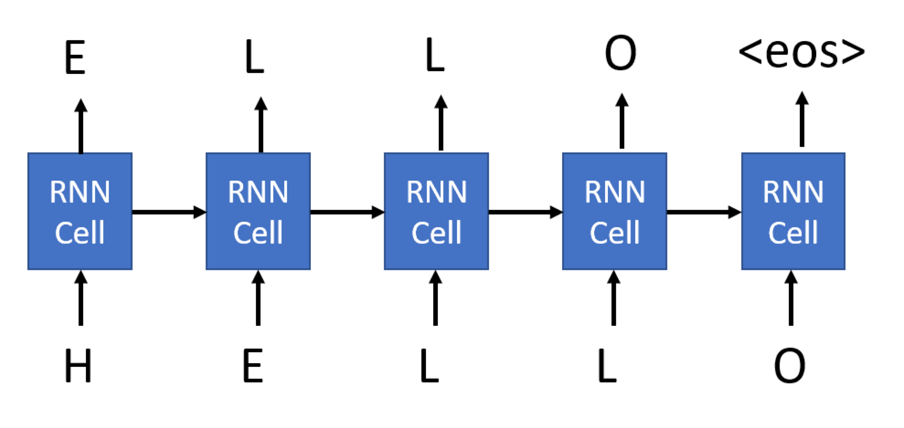
Depending on the actual scenario, we may also want to include some special characters, such as end-of-sequence
<eos>. In our case, we just want to train the network for endless text generation, thus we will fix the size of each sequence to be equal toncharstokens. Consequently, each training example will consist ofncharsinputs andncharsoutputs (which are input sequence shifted one symbol to the left). Minibatch will consist of several such sequences.The way we will generate minibatches is to take each news text of length
l, and generate all possible input-output combinations from it (there will bel-ncharssuch combinations). They will form one minibatch, and size of minibatches would be different at each training step.
Because the network takes characters as input, and vocabulary size is pretty small, we do not need embedding layer, one-hot-encoded input can directly go to LSTM cell. However, because we pass character numbers as input, we need to one-hot-encode them before passing to LSTM. This is done by calling one_hot function during forward pass. Output encoder would be a linear layer that will convert hidden state into one-hot-encoded output.
1 | class LSTMGenerator(nn.Module): |
During training, we want to be able to sample generated text. To do that, we will define generate function that will produce output string of length size, starting from the initial string start.
The way it works is the following. First, we will pass the whole start string through the network, and take output state s and next predicted character out. Since out is one-hot encoded, we take argmax to get the index of the character nc in the vocabulary, and use itos to figure out the actual character and append it to the resulting list of characters chars. This process of generating one character is repeated size times to generate required number of characters.
1 | def generate(net, size=100, start='today '): |
Special attention needs to be paid to the way we compute loss. We need to compute loss given one-hot-encoded output
out, and expected texttext_out, which is the list of character indices. Luckily, thecross_entropyfunction expects unnormalized network output as first argument, and class number as the second, which is exactly what we have. It also performs automatic averaging over minibatch size.We also limit the training by
samples_to_trainsamples, in order not to wait for too long. We encourage you to experiment and try longer training, possibly for several epochs (in which case you would need to create another loop around this code).
1 | def train_generate(net, training_dataloader, valid_dataloader, nchars, print_step=1000, lr=learning_rate): |
问题：
Better minibatch generation。我们准备训练数据的方式是从一个样本中生成一个小批量。这并不理想，因为minibatch都是不同大小的，其中一些甚至无法生成，因为文本比nchars小。此外，小批量加载的GPU不够充分。更明智的做法是从所有样本中获取一大块文本，然后生成所有输入输出对，将它们随机播放，并生成大小相等的小批。
Multilayer LSTM 尝试2或3层的LSTM cell 是有意义的。正如我们在上一单元中提到的，LSTM的每一层都从文本中提取某些模式，在字符级发生器的情况下，我们可以期望较低的LSTM层负责提取音节，而较高的层负责提取单词和单词组合。这可以通过向LSTM构造器传递层数参数简单实现。
Soft text generation and temperature
在上一个generate的定义中，我们总是将概率最高的字符作为生成文本中的下一个字符。这导致了这样一个事实，即文本经常一次又一次地在相同的字符序列之间 “循环”
然而，如果我们看一下下一个字符的概率分布，可能几个最高概率之间的差别并不大，例如，一个字符的概率为0.2，另一个为0.19，等等。例如，当寻找序列 "play "中的下一个字符时，下一个字符同样可以是空格，或e（如单词player）。
选择概率较高的字符并不总是 "公平 "的，因为选择第二高的字符仍然可能使我们得到有意义的文本。从网络输出所给出的概率分布中抽取字符是比较明智的做法。可以使用实现所谓的multinomial function 的 multinomial distribution来完成此采样。下面定义了实现此软文本生成的函数:
1 | def generate_soft(net, size=100, start='today ', temperature=1.0): |
引入了一个叫做 temperature 的参数，用来表示我们应该多努力地坚持最高概率。如果temperature是1.0，就做公平的 fair multinomial sampling ，当温度达到无穷大时--所有的概率都变得相等，我们就随机选择下一个字符。我们可以观察到，当我们把温度提高得太多时，文本变得毫无意义，而当温度接近0时，它就像 "循环的 "硬生成的文本。
Attention mechanisms and transformers
recurrent networks的一个主要缺点是，一个序列中的所有词对结果的影响都是一样的。这导致标准的LSTM编码器-解码器模型在序列到序列的任务中表现欠佳，如命名实体识别和机器翻译。在现实中，输入序列中的特定词往往比其他词对序列输出有更大的影响。
考虑sequence-to-sequence的模型，如机器翻译。它由两个递归网络实现，其中一个网络（编码器）将输入序列折叠成hidden状态，另一个网络（解码器）将该hidden状态展开成翻译结果。这种方法的问题是，网络的最终状态很难记住一个句子的开头，从而导致该模型在长句子上的质量不佳。
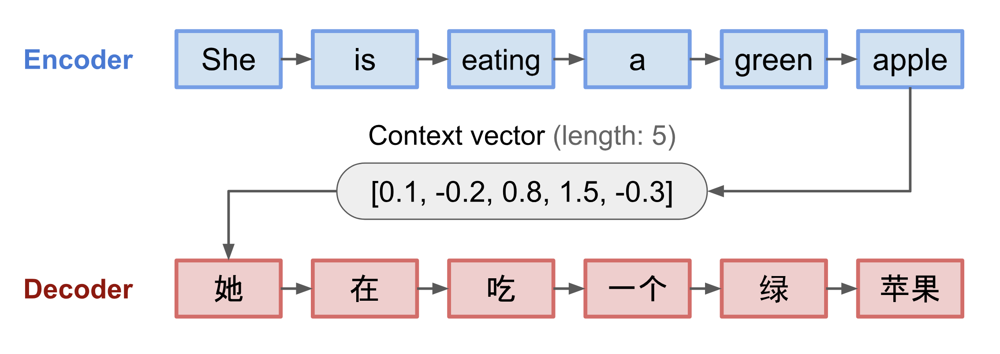
Attention Mechanisms提供了一种手段，可以对每个输入 vector 对RNN的每个输出预测的背景影响进行加权。它的实现方式是在输入RNN的中间状态和输出RNN之间建立捷径。这样，在生成输出符号\(y_t\)时，我们将考虑到所有的输入隐藏状态\(h_i\)，其权重系数\(a_{t,i}\)不同。

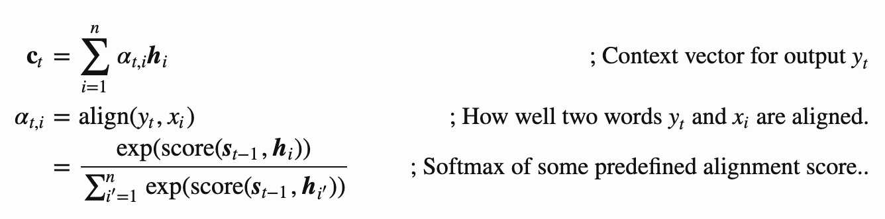
Attention matrix \(\{α_{i,j}\}\) would represent the degree which certain input words play in generation of a given word in the output sequence. Below is the example of such a matrix:
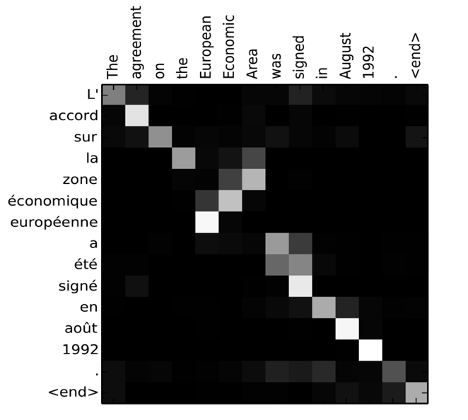
在自然语言处理领域，注意力机制是目前技术水平现状的主要原因。然而，增加注意力大大增加了模型参数的数量，导致了RNNs的扩展问题。缩放RNN的一个关键制约因素是模型的递归性质使得批量和并行化训练具有挑战性。在RNN中，一个序列的每个元素都需要按顺序处理，这意味着它不容易被并行化。
注意力机制的采用与这种约束相结合，导致了现在我们所知道和使用的从BERT到OpenGPT3的最先进的Art Transformer Models 的产生。
Transformer models
Transformer models 不是将以前的每一个预测的上下文转发到下一个评估步骤中，而是使用positional encodings和attention来捕捉一个给定的输入的上下文，并在一个给定的文本窗口中。下面的图片显示了位置编码和注意力是如何在一个给定的窗口中捕捉上下文的。
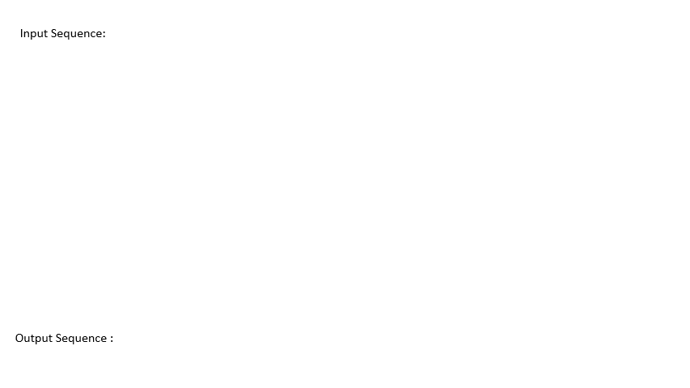
由于每个输入位置被独立地映射到每个输出位置，Transformer models可以比RNN更好地并行化，这使得更大和更有表现力的语言模型成为可能。每个 attention head 都可以用来学习不同的词之间的关系，从而改善下游的自然语言处理任务。
BERT（Bidirectional Encoder Representations from Transformers）是一个非常大的多层 transformer 网络，BERT-base有12层，BERT-large有24层。该模型首先在大型文本数据语料库（WikiPedia+书籍）上使用无监督训练（预测句子中的 masked words）进行预训练。在预训练期间，该模型吸收了大量的语言理解，然后可以通过微调来利用其他数据集。这个过程被称为迁移学习。

Using BERT for text classification
Let's see how we can use pre-trained BERT model for solving our traditional task: sequence classification. We will classify our original AG News dataset.
Because we will be using pre-trained BERT model, we would need to use specific tokenizer. First, we will load a tokenizer associated with pre-trained BERT model.
HuggingFace library contains a repository of pre-trained models, which you can use just by specifying their names as arguments to
from_pretrainedfunctions. All required binary files for the model would automatically be downloaded.However, at certain times you would need to load your own models, in which case you can specify the directory that contains all relevant files, including parameters for tokenizer,
config.jsonfile with model parameters, binary weights, etc.
1 | # To load the model from Internet repository using model name. |
The tokenizer object contains the encode function that can be directly used to encode text:
1 | tokenizer.encode('PyTorch is a great framework for NLP') |
let's create iterators which we will use during training to access the data. Because BERT uses it's own encoding function, we would need to define a padding function similar to padify we have defined before:
1 | def pad_bert(b): |
In our case, we will be using pre-trained BERT model called bert-base-uncased. Let's load the model using BertForSequenceClassfication package. This ensures that our model already has a required architecture for classification, including final classifier. You will see warning message stating that weights of the final classifier are not initialized, and model would require pre-training - that is perfectly okay, because it is exactly what we are about to do!
1 | model = transformers.BertForSequenceClassification.from_pretrained(bert_model,num_labels=4).to(device) |
Because BERT is already pre-trained, we want to start with rather small learning rate in order not to destroy initial weights.
All hard work is done by BertForSequenceClassification model. When we call the model on the training data, it returns both loss and network output for input minibatch. We use loss for parameter optimization (loss.backward() does the backward pass), and out for computing training accuracy by comparing obtained labels labs (computed using argmax) with expected labels.
1 | def train_bert(net, training_dataloader, valid_dataloader, iterations, print_step=1000, lr=learning_rate): |
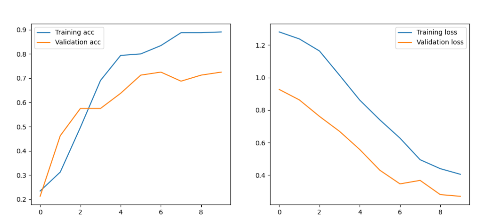